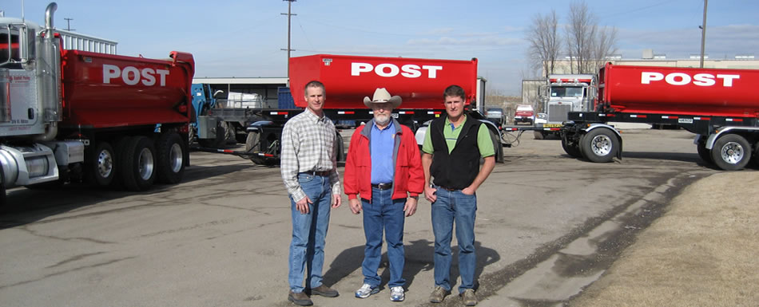

Established in 1995
Post asphalt specializes in road construction. The areas Post has worked at range from Logan all the way down to Utah valley area. There is no big or small job that Post can not accomplish. We care for our customers and want the best quality to show for ourselves.